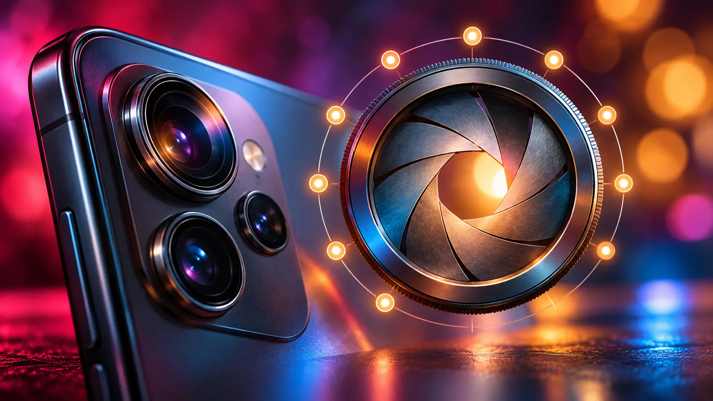

Apple · Field note 011
Camera apps unlock finer iPhone aperture control
Apple’s own Camera app exposes four aperture settings, but third-party tools are showing that the iPhone 18 Pro hardware can do more.

The variable aperture on iPhone 18 Pro is physically capable of finer adjustment than Apple’s Camera app allows.
In manual mode, Apple offers four positions: ƒ/1.48, ƒ/1.8, ƒ/2.8, and ƒ/4. The automatic aperture system uses the same four choices. Apple’s developer tools, however, allow third-party camera apps to reach settings between them.
Ten stops instead of four
Blackmagic Camera for iOS now presents ten aperture presets. The additional positions sit between Apple’s native options, giving photographers smaller steps across the lens’s range. The free app introduced support in version 3.5 and later received a 3.5.1 update focused on performance and stability.
Moment Pro Camera II has added the same kind of control. The $12.99 app adjusts the aperture from ƒ/1.48 through ƒ/4 in one-third-stop increments, producing ten presets similar to the controls found on many dedicated digital cameras.
The practical difference between neighboring settings may be subtle because of the iPhone sensor’s size. Small one-third-stop changes may not transform background blur or depth of field, but they give photographers more room to choose how the camera balances light and focus.
The apps reveal an important distinction in the iPhone 18 Pro camera system: Apple’s four-position interface is a software decision, not a hard boundary of the lens.